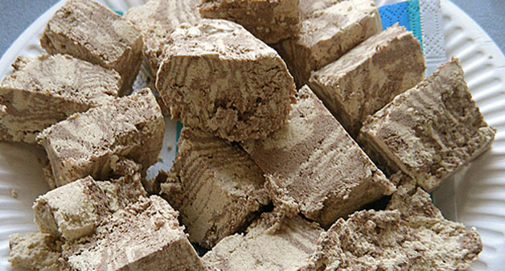

Вы также можете приготовить вкуснейший Салат "Подсолнух"
Халва

Описание
Этот рецепт болгарской кухни я нашла в журнале "Кухонька". Очень интересный, необычный десерт - обжаренная в сливочном масле манная крупа с добавлением корицы, ванили, лимонной цедры и грецких орехов. Получается очень нежный, мягкий и ароматный десерт. А детки его кушают с преогромным удовольствием!
Ингридиенты
- Крупа манная — 2 стак.
- Масло сливочное — 120 г
- Сахар — 2 стак.
- Орехи грецкие — 100 г
- Вода — 4 стак.
- Ванильный сахар — 1 пакет.
- Корица — 1 ч. л.
- Цедра лимона — 1 ч. л.
- Сахарная пудра (с ванилью) — 1 ст. л.
- Масло растительное (для смазки формы) — 1 ч. л.
- Сухари панировочные — 1 ст. л.
Рецепт
- Манку смешать с тёртыми грецкими орехами. Сливочное масло растопить на сковороде, всыпать манно-ореховую смесь и обжарить её до золотистого цвета.
- Сварить сахарный сироп: воду вскипятить, добавить сахар, корицу, щепотку ванилина, цедру лимона и варить 10 минут.
- Залить сиропом обжаренную манку, быстро и тщательно перемешать, закрыть крышкой и варить минут 10, помешивая.
- Форму смазать растительным маслом и обсыпать панировочными сухарями, выложить туда горячую массу и разровнять ложкой, смоченной в холодной воде. Можно разложить этот десерт по маленьким формочкам, получатся порционные пироженки. Массу остудить.
- Перевернуть на блюдо и посыпать сахарной пудрой, смешанной с ванилином.
- Порезать халву на кусочки. Греем чай и угощаемся! Ещё очень вкусно кушать такое лакомство с холодным молоком.
Приятного аппетита!